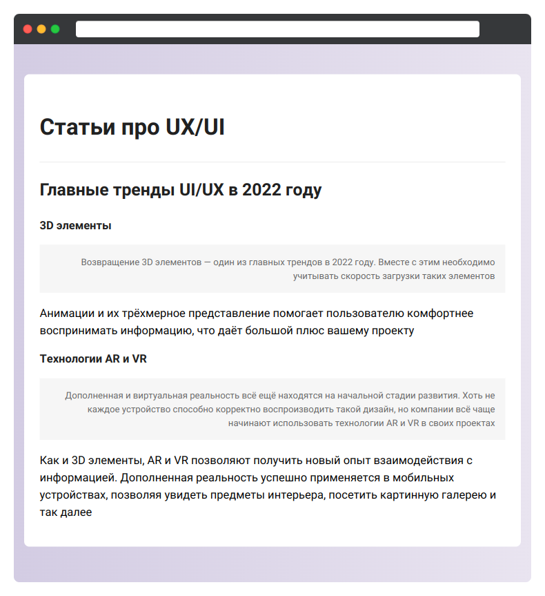

Оформите небольшую страницу со статьями. Для решения задачи используйте селекторы, изученные не только в этом уроке, но и в прошлых

selectors.css
- Все заголовки 1, 2 и 3 уровня имеют цвет
#212121
Остальные изменения вносятся внутри элемента с классом articles:
- Заголовок первого уровня имеет размер шрифта в
2em - Заголовки второго уровня имеют размер шрифта в
1.5em - Заголовки третьего уровня имеют размер шрифта в
1em - Элемент
<article>имеет сплошную границу сверху с цветом#e5e5e5. Ширина границы:1px
Отдельно стилизуется первый параграф после заголовка третьего уровня:
- Внутренние отступы:
20pxсо всех сторон - Цвет текста:
#686868 - Текст выровнен по правому краю
- Размер текста:
0.8em - Фон:
#f6f6f6